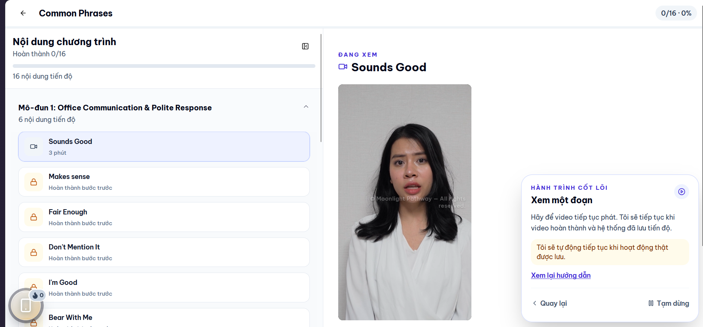
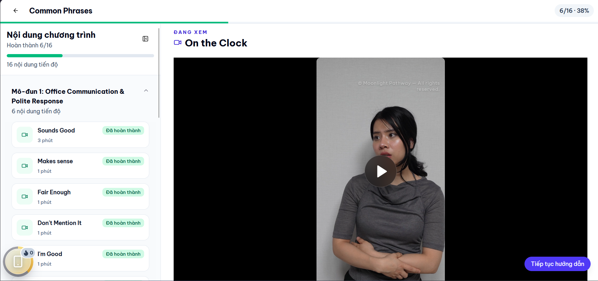

Feedback 01: User Experience & Layout
Placing the video directly in the center of the content whitespace feels disruptive to users compared to docking it in a dedicated corner. Additionally, the left sidebar heading column does not need to be excessively wide.
Current State & Identified Issue

Recommended Design Solution
